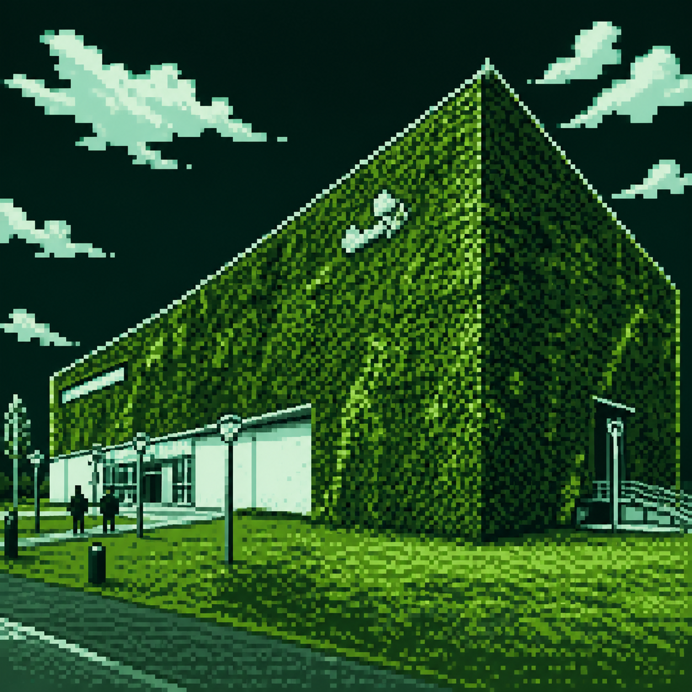
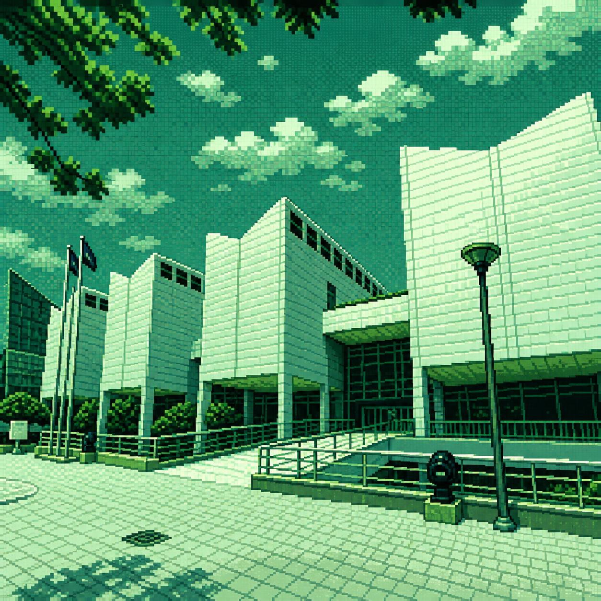
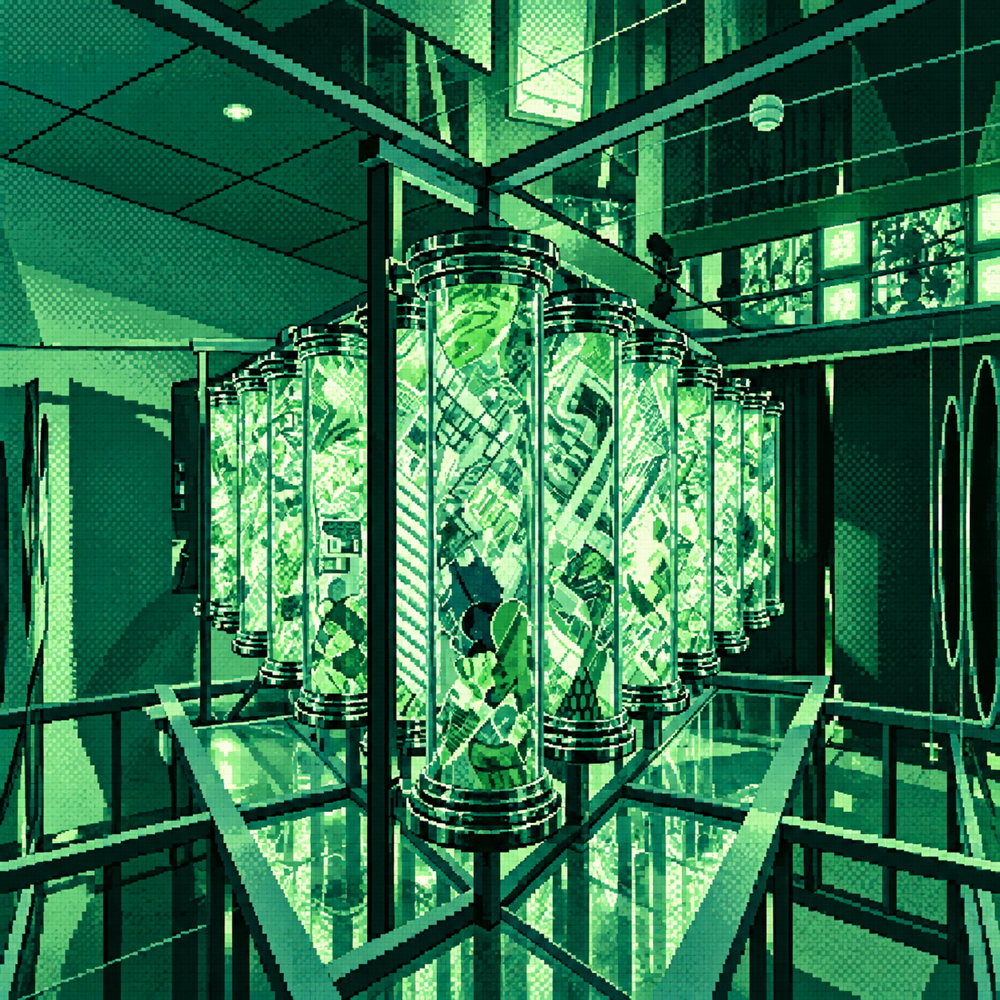
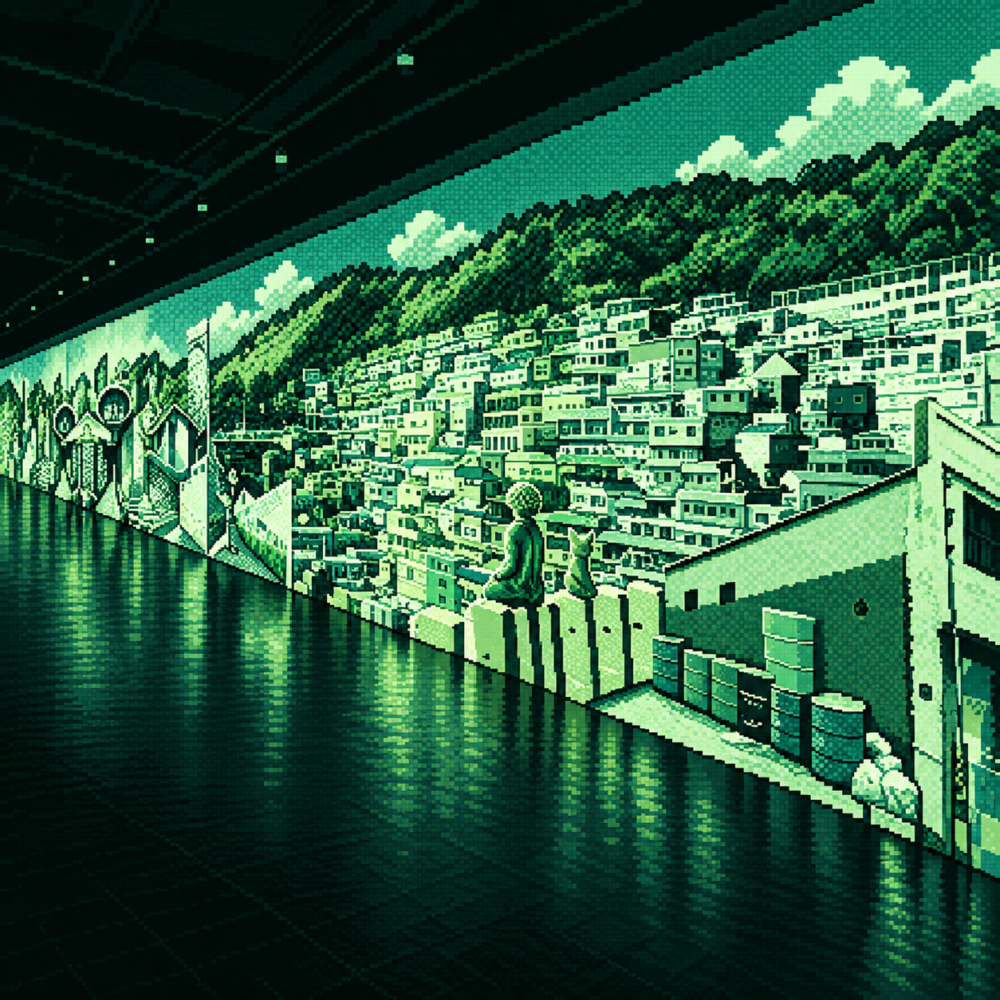
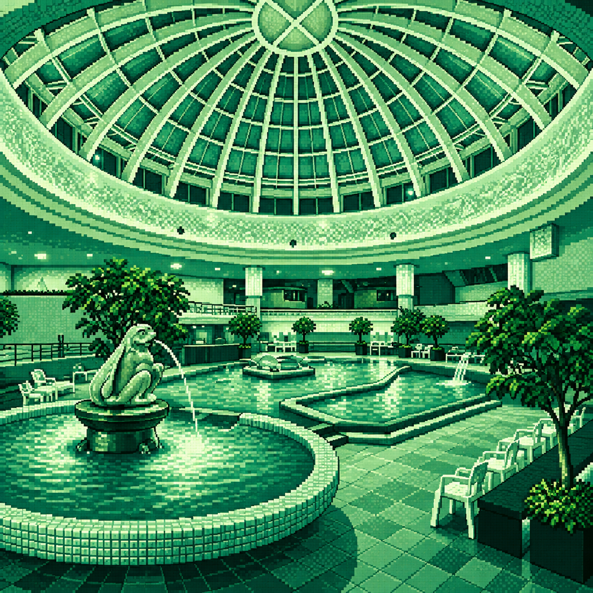

$ report
resources: 6
status: ready

대표 유형 문화·예술
한 줄 소개 현대미술과 뉴미디어, 을숙도의 생태환경을 함께 경험할 수 있는 서부산의 문화예술 공간
대표 체험 현대미술 전시 관람, 어린이예술도서관 이용, 을숙도 생태 탐방
추천 시기 봄ㆍ가을

대표 유형 문화·예술
한 줄 소개 부산 미술의 흐름과 국내외 현대미술, 이우환의 작품 세계를 만날 수 있는 부산 대표 공립미술관
대표 체험 기획전 및 소장품전 관람, 이우환공간 감상, 미술 교육 프로그램
추천 시기 사계절ㆍ봄ㆍ가을

대표 유형 문화·예술
한 줄 소개 빛과 영상, 설치 작품이 공간 전체로 확장되는 센텀시티의 미디어 전문 현대미술관
대표 체험 미디어아트 감상, 현대미술 작품 탐색
추천 시기 사계절ㆍ실내 관람

대표 유형 문화·예술
한 줄 소개 자연과 부산의 풍경을 빛·소리·향으로 재해석한 영도의 몰입형 미디어아트 전시 공간
대표 체험 몰입형 미디어아트 감상, GARDEN STARRY BUSAN 관람
추천 시기 사계절ㆍ실내 관람

대표 유형 온천·웰니스
한 줄 소개 다양한 온천탕과 찜질 공간에서 여행 중 휴식을 즐길 수 있는 동래의 도시형 온천 시설
대표 체험 온천욕, 찜질ㆍ휴식
추천 시기 사계절ㆍ가을ㆍ겨울
대표 유형 자연·웰니스
한 줄 소개 성지곡수원지와 울창한 편백림을 걸으며 몸과 마음의 휴식을 얻을 수 있는 도심 속 치유 공간
대표 체험 편백숲 걷기, 호흡과 명상, 성지곡수원지 산책, 숲 체험
추천 시기 봄ㆍ가을
$ data_connection
한국관광공사 API의 부산 관광정보 연결 상태를 확인하고 있습니다.
부산 소재 6곳의 주소·상세 소개와 탐색기 팝업의 제공 사진을 갱신합니다. 카드의 픽셀 이미지는 유지합니다. 대표 유형·체험·추천 시기는 편집 정보이며, 전시·예약·운영 일정은 각 공식 홈페이지에서 확인해 주세요. 치유의 숲은 어린이대공원 전체 API 정보를 참고합니다.
최근 API 확인: 아직 확인하지 않았습니다. 연결 다시 확인 ↻
API 응답은 서버에서 최대 30분 캐시합니다. API가 중단되면 저장된 소개를 유지하며 연결 상태를 별도로 표시합니다.
JavaScript가 꺼져 있어 API 상태 확인과 자동 갱신을 사용할 수 없습니다. 저장된 소개를 표시합니다.
$ next_destinations 구현 예정 · 부산 12곳
부산의 예술 감상에서 문화 산책까지. 아래 공간은 자료 검토 후 상세 카드와 API 연동을 순차 추가할 예정입니다.
F1963 수영구 / 복합문화·산업유산 구현 예정 고은사진미술관 해운대구 / 사진·전시 구현 예정 부산근현대역사관 중구 / 역사·전시 구현 예정 영화의전당 해운대구 / 영화·공연 구현 예정 부산영화체험박물관 중구 / 영화·체험 구현 예정 부산문화회관 남구 / 공연·전시 구현 예정 깡깡이예술마을 영도구 / 공공예술·마을 구현 예정 흰여울문화마을 영도구 / 문화·산책 구현 예정 부산박물관 남구 / 역사·문화 구현 예정 복천박물관 동래구 / 고고·역사 구현 예정 도모헌 수영구 / 문화·정원 구현 예정 을숙도생태공원 사하구 / 생태·산책 구현 예정
_